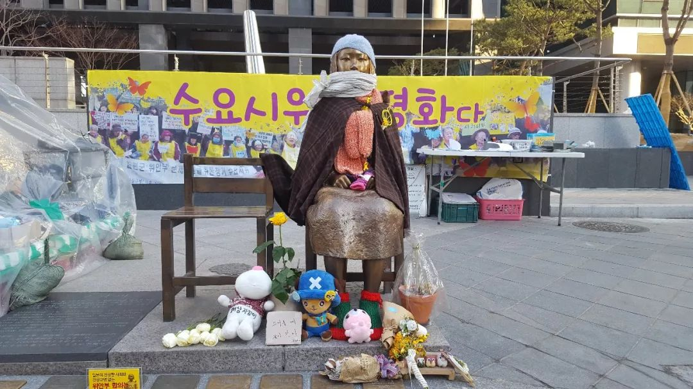

收录于合集

简 介
** 【作者】** 姜龙范 天津外国语大学国际关系学院教授，天津市特聘教授，博士生导师。教育部首批“新世纪优秀人才”，主要从事东北亚国际关系、朝鲜半岛热点问题的教学与研究。
** **【 来源 】****姜龙范.(2018).日韩建交后的“慰安妇问题”:政府,民意与美国因素. 日本学刊 ,(6),95-120.
【摘要】 日韩两国实现邦交正常化后，受多重因素的影响和制约，“慰安妇问题”在相当长的历史时期内处于被遮蔽的状态。20世纪90年代初，“慰安妇问题”开始浮出水面，成为两国政府不得不正面处理和应对的棘手课题。日韩两国在处理“慰安妇问题”上龃龉不断，并未取得实质性进展，直到朴槿惠上台执政后，通过美国的居间斡旋，两国迅速就“慰安妇问题”达成“最终且不可逆”协议。该协议充分体现了日美韩在政治层面和战略层面的不同考量，但缺乏深厚的民意基础。 随着朴槿惠总统下台，协议在韩国成为众矢之的。日韩 “慰安妇问题”并未因这一协议的签署而被彻底解决，今后仍可能成为影响日韩关系顺利发展的一大障碍。
【关键词】 慰安妇问题; 慰安妇协议; 日韩关系; 政治博弈; 民意;

设置在日本驻韩国大使馆前的慰安妇少女铜像
正文
1965年6月，日本和韩国正式签署《日本国与大韩民国之间基本关系条约》 (以下简称《日韩关系基本条约》) ，实现了两国邦交正常化。然而，这并未彻底解决两国之间的历史遗留问题，也未能从根本上弥合两国人民之间的情感裂痕。日韩之间的历史问题根深蒂固，“慰安妇问题”是其中最为敏感的议题。2015年12月28日，日韩签署《日韩慰安妇协议》 (以下简称“慰安妇协议”) ，试图彻底解决两国间持续半个世纪的“慰安妇问题”。但是，协议签署的时机和背景颇为蹊跷，引发了韩国朝野的普遍质疑和反对，甚至有人认为这是韩日两国政府“暗箱操作”的结果。2016年12月31日，正值两国协议达成一周年之际，不仅日本驻首尔大使馆门前的“慰安妇”少女像未被撤走，反而在日本驻釜山总领事馆门口又立了一尊。更让人感到不可思议的是，在2017年5月举行的韩国大选中，所有总统候选人都主张应与日本重新协商“慰安妇问题”，刻意与主导签署“慰安妇协议”的朴槿惠政府划清界限。
文在寅总统上任后立即表示， “多数韩国人在情感上无法接受‘慰安妇协议’”。不仅如此，2017年7月19日公布的《未来五年国家政策行动规划》还决定于2018年设立“慰安妇纪念日”，2019年成立“慰安妇问题研究所”，2020年建立“慰安妇历史博物馆”，使原本已十分复杂的“慰安妇问题”再次掀起巨大波澜，并可能导致日韩两国政府签署的“慰安妇协议”成为一张废纸，也给未来的两国关系带来更大不确定性。
综观日本、韩国及中国学界有关“慰安妇问题”的研究成果，大多侧重于某一时期的专题性实证分析，缺乏对“慰安妇问题”发展脉络的梳理，尤其是对朴槿惠执政时期，韩日两国政府缘何在较短时期内达成妥协、签署协议的深层背景的充分探讨和剖析。鉴于此，本文从梳理日韩“慰安妇问题”的演变轨迹入手，集中对朴槿惠执政时期日韩两国政府达成“慰安妇协议”及其后又备受诟病的深层背景和内外动因进行深入分析和探讨，并对两国关系的未来走向予以评估和展望。
一 、
战后日韩“慰安妇问题”的演变轨迹
战后日韩两国漫长的“马拉松式”外交交涉，将主要精力集中在邦交正常化谈判上，受多重因素的影响和制约，“慰安妇问题”并未被纳入两国谈判的议题之内，导致这一问题被搁置下来。日韩建交后的一段时间里，由于两国主要致力于加强经济合作，“慰安妇问题”也未被提及。自20世纪90年代之后，“慰安妇问题”逐渐浮出水面，成为两国不得不直接面对和解决的重要课题。从历史发展的脉络来看，“慰安妇问题”在战后日韩关系史上呈现出“被遮蔽”、“被忽视”、“被激活”以及“被激化”的迥异面相。
(一) 经济优先逻辑下的“慰安妇问题”
战后的日韩关系是一对特殊的双边关系，尤其在冷战时期，两国关系的发展和演变与美苏博弈的此消彼长息息相关。1951年9月《日美安全条约》签署后，美国出于朝鲜战争的需要，立即指示日本同韩国进行外交谈判。美国力促日韩改善关系的目的，除了冷战的“反共”需要外，还具有将对韩国的经济负担转嫁给日本的意图。朝鲜战争爆发后，韩国在经济上完全依赖美国援助，让美国不堪重负。1951年10月，在盟军总司令部 (GHQ) 的安排下，日韩两国代表在东京举行建交预备会谈，尔后经过长达14年的“马拉松式”谈判，双方最终于1965年6月正式签署《日韩关系基本条约》。
在漫长的日韩邦交正常化谈判过程中，双方着重就财产请求权、“李承晚线”4、渔业问题、旅日侨民的法律地位以及领土争端等问题进行了谈判。尽管在日韩邦交正常化谈判及韩国外交文书中能够窥见双方协商“慰安妇问题”的蛛丝马迹，但其显然被排除在主要议题之外，甚至在双方达成的八项请求权协议文本中也找不到“慰安妇问题”的相关内容。 “慰安妇问题”之所以未能成为日韩邦交正常化谈判的主要议题，主要有两方面原因:一是韩国国内因素。朴正熙总统上台伊始，韩国政局混乱、经济崩溃，急需日本的支持。为了维护政权的合法性和正统性，并重振经济，朴正熙积极倡导“经济第一主义”，制定了“经济开发五年计划”，提出“先建设、后统一”的口号，旨在提高国家的经济实力。由于来自美国的经济援助日益减少，韩国政府遂将目光转向经济高速发展的近邻日本，甚至不惜在谈判中做出重大让步，从而忽略了敏感的“慰安妇问题”。二是国际因素。美国在日韩邦交正常化谈判的所有“关键时刻”周旋于日韩两国之间，居间调停。在美日、美韩双边高层会谈中，美国始终将日韩邦交正常化作为主要议题，极力为日韩谈判创造良好的氛围，从而促成《日韩关系基本条约》的缔结。也正因如此，“慰安妇问题”没有成为日韩邦交正常化谈判的主要议题，进而成为其后影响日韩两国关系走向的“历史悬案”。
日韩邦交正常化之后，两国关系长期处于“政冷经热”状态。朴正熙总统执政时期，韩日两国经贸关系发展迅速，截至1973年上半年，日本对韩国投资总额已达3.5亿美元，远远超过美国对韩投资额 (1.7亿美元) ，跃居韩国利用外资来源地排名榜首位。但是，进入20世纪70年代后，两国在政治、安全领域却接连发生严重摩擦:1973年8月，韩国特工在日本东京帝国饭店绑架了韩国新民党总裁、总统候选人金大中，日韩两国“定期阁僚会议”由此中断;翌年8月，又发生了在日朝鲜侨民文世光枪击朴正熙总统事件。虽然朴正熙幸免于难，但其夫人陆英修中弹身亡。韩国政府认为这是一起“朝鲜以日本作为‘工作基地’对韩国实施的破坏和颠覆活动”，责任应由日本承担。这两起重大事件，使两国关系一度陷入高度紧张状态。虽然经过美国居中调解，双方达成外交妥协，但其影响并未消除。在此背景下，日韩两国无暇顾及处理“慰安妇问题”。
1983年1月，日本首相中曾根康弘访韩，这是日本首相第一次对韩国进行正式访问。翌年9月，韩国全斗焕总统实现对日本的访问，这是日韩建交19年以来韩国总统首次访日。在全斗焕总统访日期间，裕仁天皇对日韩之间“不幸的过去，表示遗憾”。但在会谈期间，天皇避开韩国主张的“谢罪”字眼，使用了“遗憾”的暧昧措辞，令韩国对日本的反省诚意产生怀疑。值得一提的是，直至20世纪80年代末，在日韩首脑会谈或高层互访中均未提及敏感的“慰安妇问题”。原因在于，日本坚持认为《日韩请求权协定》中已经圆满解决了这一问题，当时的韩国政府也基于同样考量认为难以再向日本提出对“慰安妇”当事者的赔偿问题。
“慰安妇问题”正式成为日韩交涉的焦点，是在20世纪90年代初。令人费解的是，第一次公开提出“慰安妇问题”的是日本，并非韩国。自1991年开始，“慰安妇问题”正式成为日本国内政治的重要议题。1991年12月6日，韩国的民间团体“太平洋战争受害者遗属会”35名成员向日本政府提起诉讼，其中包括3名“慰安妇”当事者。与此同时，日本社会党委员长土井多贺子等25名女议员也向加藤纮一内阁官房长官提交了有关要求日本政府调查真相、谢罪及赔偿的建议书。12月7日，在东京举行的日韩外务省局长级会谈上，韩国才正式向日本政府提出交涉。恰在此时，日本中央大学教授吉见义明在日本防卫研究所图书馆发现了有关战时日本军部参与“慰安妇问题”的相关资料，并将之交给日本主流媒体之一的《朝日新闻》。12月8日，日本外务大臣渡边美智雄在电视节目中公开回应，这是日本政府首次公开承认日韩之间存在“慰安妇问题”。与此同时，日本政府开始对第二次世界大战中与日军有关的“慰安妇问题”进行调查。
1992年1月11日，《朝日新闻》在晨报的头版头条、社会版及晚报上详细披露了战时日本军方参与经营“慰安所”的情况。翌日，《读卖新闻》和《日本经济新闻》也做了跟踪报道。消息传出，日韩两国舆论哗然。加藤纮一也不得不明确表态，“日本军部确实曾参与慰安妇事件”。在这一特殊背景下，日本首相宫泽喜一于1992年1月16日访问韩国，其间正式承认日本军队曾参与征召随军“慰安妇”和经营“慰安所”，对于“被征召的朝鲜妇女经受的难以用笔墨和言词形容的痛苦表示由衷的歉意并进行反省”。 对此，卢泰愚总统表示赞赏，并期待日本采取必要措施，尽快澄清事实真相。卢泰愚的这番讲话表明，韩国政府在这个问题上的立场过于温和。
从日韩建交以来关于“慰安妇问题”进行外交交涉的发展脉络来看，历届韩国领导人确有刻意淡化历史问题的倾向，而将关注的焦点集中在优先发展经济方面，这一点在卢泰愚总统的相关言论以及金泳三总统对相关问题的处理方式中有充分体现。1990年5月，韩国总统卢泰愚访日时，明仁天皇、海部俊树首相分别用“痛惜”“谢罪”等措辞对历史上的侵略行为表示反省。对此，卢泰愚表示:“既然日本已直率地认错，并做了反省和道歉，我们就应该宽宏大量地接受他们的道歉。”而金泳三在上台之初，甚至将历史问题与经济问题脱钩，倡导韩日两国应从注重“政治逻辑”转向“经济逻辑”。1996年6月，金泳三总统在与到访的日本首相桥本龙太郎会谈时，也未主动提及包括“慰安妇问题”在内的历史遗留问题。显然，韩国刻意避开难以达成共识的棘手问题，是为营造有利于两国建立“面向21世纪的新型关系”的友好氛围，谋求在经济层面与日本发展关系、加强合作。
(二) 历史及领土争端阴影下的“慰安妇问题”
20世纪90年代中期以后，日本政治右倾化日益严重，阁僚接连在历史问题上大放厥词，美化侵略战争，进一步损害了原本就脆弱的日韩关系。尤其是1996年2月两国在“竹岛” (以下根据行文，日方称“竹岛”，韩方称“独岛”) 归属问题上发生严重争执，两国关系降至建交以来的最低点，陷入“史无前例的危机”。翌年，亚洲金融危机爆发，韩国深受其害，至1998年初金融危机进一步发展为全面的经济危机，使韩国遭受“朝鲜战争以来最大的一次国难”。面对“国难”，韩国国民在反思政治、经济体制弊端的同时，也对金泳三政府的对日政策提出质疑，认为“金泳三政权在历史认识和领土等问题上过分刺激了日本人的感情”，要求反省过去对日外交的呼声渐高，韩国主流媒体《中央日报》和《朝鲜日报》纷纷发表评论，呼吁“重新恢复业已荒废五年的韩日关系”。
在韩国面临历史上空前严重的金融危机和经济困境的背景下，金大中上台执政，在内政、外交方面推行一系列改革，修复韩日关系是其对外政策的核心课题之一。1998年10月，金大中总统访问日本，与日本首相小渊惠三共同签署《韩日共同宣言——面向21世纪的新合作伙伴》以及附属文件《面向21世纪韩日双边合作行动计划》。在《日韩共同宣言》中，日本就过去的殖民统治向韩国做书面反省和道歉，金大中总统则表示今后不再提及历史问题，这是两国首次以文件形式“清算”过去历史，“翻开了日韩关系史新的一页”，“标志着两国关系迎来了一个转折点”。尔后韩国立即解除实行了53年的对日本大众文化产品的禁令，开始分阶段对日开放文化市场。金大中在结束访日时特别强调，“本世纪发生的问题应在本世纪内了结”，要以崭新的面貌迎接韩日关系新世纪的到来。 在金融危机爆发的特殊背景下，金大中政府又一次将 “慰安妇问题”搁置起来。
但是，历史问题并不是单凭政治家间的协议或者一纸文书即能“了结”的。2001年4月，日本文部科学省审查通过右翼团体“新历史教科书编撰会”成员执笔的中学历史教科书。此举引起韩国社会极大愤怒，纷纷向政府施加压力。韩国政府5月8日向日本政府递交了要求修改“新历史教科书”的备忘录，强烈谴责“新历史教科书”严重歪曲韩国历史。7月8日，韩国国会一致通过决议，敦促金大中政府对日采取更为强硬的措施，要求政府宣布1998年签署的《韩日共同宣言》无效。为抗议日本政府在历史问题上出尔反尔的恶劣行径，韩国政府还召回驻日大使，两国关系严重倒退。8月13日，刚上台执政不久的小泉纯一郎首相正式参拜靖国神社，把日韩关系进一步推向深渊。正是在这一背景下，10月15日小泉首相对韩国进行工作访问。为了缓解对韩关系，小泉一下飞机，就直奔西大门独立公园，参观日本殖民统治时期残酷镇压韩国独立运动人士的“西大门监狱”。但是，小泉在那里的反省和道歉之辞并未赢得韩国国民的充分信任。金大中总统在与小泉首相的会谈中，要求其在今后将反省和道歉“付诸具体实践”。一言以蔽之，金大中执政五年间，尽管韩日关系取得了不少进展，却未消除两国间的历史积怨。
卢武铉就任总统后，韩日两国的高层互动颇为频繁，并确立了首脑不定期会晤机制。卢武铉曾公开表示:“在本政府任期内不从政府角度提及历史问题。”此言论一出，旋即在韩国国内引起轩然大波，媒体以“屈辱外交”等措辞对卢武铉表示谴责。在强大的舆论批判下，卢武铉改变态度，敦促日本妥善处理“历史问题”。2005年恰逢日韩邦交正常化40周年，为了使两国关系获得进一步发展，双方确定将该年定为“日韩友好年”，并筹划安排一系列双边交流活动。然而事与愿违，就在这一年日韩关系急转直下。3月16日，日本岛根县议会不顾韩国方面的强烈抗议，强行通过“竹岛日”条例。翌日，韩国政府发表声明，将这一条例视为对韩国的“第二次侵略”，并向日本政府提出严正交涉。3月23日，韩国总统卢武铉发表《就韩日关系告国民书》，呼吁国民要不惜经济代价，准备同日本打一场“持久战”。8月26日，韩国外交通商部宣布解密韩日建交时的156份、共35000多页的政府文件，目的是揭露《韩日关系基本条约》谈判时两国并未涉及“慰安妇”等日本二战罪行问题，以便日后继续追究日本的“法律责任”。同日，韩国政府官员在记者招待会上表示，在“慰安妇问题”上“日本依然负有法律责任”。这是韩国政府首次明确表示日本负有对韩赔偿责任。对此，日本外务省当天做出回应称，日韩之间的赔偿问题已完全并最终得到了解决。
针对日本政府大张旗鼓开展的“入常”外交，韩国指出，“日本获得邻国的信赖是其在联合国作为领导国家受到尊敬的第一步”，并开始公开利用“慰安妇问题”敲打日本，称韩国将要求联合国人权委员会等国际组织追究日本“反人道的非法行为的法律责任”。19这对于在“入常”问题上欲寻求韩国支持的日本来说无异于当头一棒。
2006年10月，日本新任首相安倍晋三访问韩国并与卢武铉总统举行会谈，双方同意共同为构筑“面向未来的友好关系而努力”。安倍提出朝核、绑架、加速日韩自由贸易协定 (FTA) 谈判等问题，卢武铉则强调靖国神社、历史教科书、随军“慰安妇”及“独岛”问题20，双方未能达成一致意见。此后，两国不但未能恢复首脑“穿梭互访”，反而持续在领土和历史问题上发生摩擦和冲突。
李明博上台后，大幅度调整卢武铉时期的对日外交方针，韩日两国关系迅速升温。2008年4月，李明博总统访问日本并与福田康夫首相举行会谈，双方在会谈后发表的联合公报中提到，同意把双边关系提升为“成熟的伙伴关系”，开启日韩关系“新时代”。李明博表示，他和福田康夫首相决心建立“牢固的双边关系”，“就像能不为强风所动摇的深深扎根的大树一样”。尔后，中断四年之久的“穿梭外交”得以恢复，双方关系迅速升温，韩国驻日使馆甚至一度删除了其网站上关于“独岛”的历史和地理位置的表述。
然而，在历史问题上采取宽容姿态的李明博，后来也遇到了棘手的难题。日本政府不顾韩方一再交涉，首次在文部科学省制定的《初中社会科教科书新指导纲要解说书》内将“竹岛”表述为日本领土。韩国媒体纷纷谴责日本的“挑衅”和“背叛”，韩国政府也向日本政府提出强烈抗议并召回驻日大使，李明博的对日“现实主义外交”遭受重创。不仅如此，日本在2008年版的《防卫白皮书》中增加了日本“固有领土——竹岛的领土问题仍未解决”的内容，引起韩国极大不满。2008年9月，韩国《中央日报》的民调结果表明，认为日本是“最讨厌的国家”的韩国受访者从2007年的38%增至57%。
李明博执政以后，虽然双方围绕历史问题和领土问题的争执从未停止，两国关系却“冻而不僵” “斗而不破”。2010年8月10日，日本首相菅直人不顾党内外的反对，就《日韩合并条约》签署100周年发表首相谈话，对日本过去对韩国实行的殖民统治表示反省和道歉。“天安舰事件”和“延坪岛事件”发生后，朝鲜半岛局势持续紧张，日韩关系迅速得到回暖，原本相对薄弱的日韩军事合作也大为加强。2011年10月19日，日本首相野田佳彦访问韩国，向李明博总统移交日方在殖民统治时期掳走的五卷古书，呼吁两国发展“以未来为导向”的双边关系。但是，在“慰安妇问题”上，野田佳彦仍以日韩建交时业已解决为借口敷衍塞责。
(三) 险些断送日韩关系的“慰安妇问题”
2012年12月，安倍晋三第二次上台组阁。2013年2月，朴槿惠就任韩国总统。此时，两国关系因前任总统李明博登上“独岛”而急剧恶化。安倍上台后，在历史问题上频繁制造事端，使两国关系雪上加霜。2013年12月26日，安倍首相公然参拜靖国神社，使韩国政府强烈不满，日韩两国陷入互不往来的“近乎断交的状态”。12月31日，韩国国会一致通过谴责安倍参拜靖国神社的决议案，其中指出“安倍参拜靖国神社的行为是对韩日关系和东北亚和平的挑衅”。尔后，韩国外交部紧急召见日本驻韩国大使表示严重抗议和谴责，朴槿惠总统还发表谈话强烈批判日本“有悖于国际社会普遍价值、道德标准及人类良心的行为”，希望日方在“新的一年不要撕裂历史的伤痕，导致国家之间的互信遭到破坏，使国民感情恶化”。在“慰安妇问题”上，第二次安倍政府的立场不仅没有进步，反而进一步倒退。实际上，安倍第一次执政时就试图通过修改“河野谈话”来否认“慰安妇问题”。为此，他指示相关部门组建“有识者恳谈会”以重新评估“河野谈话”。
第二次就任首相后，安倍不仅拒绝继续推进业已建立的日韩两国磋商机制，还试图否定“河野谈话”。对此，韩国主流媒体《中央日报》发表社论，警告日本“如果否定‘河野谈话’，韩日关系将遭到破坏”。272014年2月，日本内阁官房长官菅义伟表示，要重新审查“慰安妇”当事者的证言。4月，日本正式组建“有识者恳谈会”，并于6月22日发表“河野谈话”调查报告，得出的结论是谈话内容是妥当的。
显然，“有识者恳谈会”的审查结论与安倍政府的政策基调相左。于是，2014年10月21日，日本内阁官房长官菅义伟公开否认“河野谈话”，指出该谈话“有很大问题，我们否认那个发言”。此言一出，招致韩国强烈批评，美国也敦促日本坚持“河野谈话”精神并同韩国改善关系。迫于美国压力，安倍不得不承诺依然坚持“河野谈话”。
综上所述，历史问题和领土问题始终是横亘在日韩两国之间的最大障碍，而在历史问题中 “慰安妇问题”最具象征性意义。日韩建交以来韩国历届政府在历史问题上不断对日本做出让步，避免与日本纠缠，力争不做出极端反应，以至于2011年8月韩国宪法法院裁定行政当局在“慰安妇问题”上的不作为属于“违宪”行为。安倍第二次上台执政，肆意推行“历史修正主义”路线，导致日本官方层面在以“慰安妇问题”为代表的历史认识问题上态度严重倒退，成为制约两国关系发展的主要障碍。
**
**
二
日韩达成“慰安妇协议”的动因分析
安倍第二次上台执政后，日韩关系持续恶化，引起美国的高度关注。敦促日韩改善关系、推动美日韩三边峰会尽早召开成为美国的首要课题。针对日方在涉及“河野谈话”和“村山谈话”立场上的动摇和倒退，韩国提出严正交涉，呼吁日本停止相关错误言行，认真面对和解决“慰安妇问题”。2015年，日韩两国以建交50周年为契机，在美国积极斡旋和推动下，针对棘手的“慰安妇问题”达成了“最终且不可逆”协议。长期横亘在两国之间的外交难题何以很快达成共识，蕴藏其后的历史背景和深层动因值得深入解析。
(一) 美国的斡旋与韩国的“双轨战略”
美国担心日韩关系持续恶化将使韩国倒向中国一边，为此频繁劝诫日韩两国尽快举行和谈。 2014年2月13日，美国国务卿克里在与韩国外长尹炳世共同出席的联合记者会上呼吁日韩双方搁置历史争议，寻求双方都能接受的处理方案，面向未来，加强双边和多边合作。3月6日，奥巴马总统致电安倍首相，提出了举行美日韩三边峰会的方案。
实际上，韩国政府并未完全关闭与日本对话的大门。2014年1月6日，朴槿惠总统在记者会上表示，“迄今为止，我从未宣布过不举行韩日首脑会谈”。即便是在发生安倍参拜靖国神社的严重事态后，韩国仍未放弃促成韩日首脑会谈的努力。 韩国采取 “政经分离”的对日外交政策，以“双轨战略”应对日本的政治右倾化，即在历史问题和领土争端上坚持原则和坚决应对，同时努力保持外交接触，不断推进两国经济合作和民间交流向纵深化方向发展。
**在对待安倍政府的历史认识问题上，韩国采取了安倍政府如果不对历史问题和参拜靖国神社做出承诺，则不与之举行会谈的立场。为挑拨日益密切的中韩关系，日本刻意实施 “拉韩抑中”策略，试图向中国打“韩国牌”。**2014年3月12日，安倍派外务省事务次官斋木昭隆赴韩国就首脑会谈事宜进行磋商。3月14日，安倍首相在日本参议院预算委员会上表示，“无意修改河野谈话”，将总体上继承包括“村山谈话”在内的历届日本政府的立场。与此同时，日本政府也一再强调，“日本方面对话的大门永远敞开，希望从大局出发，为了构建与韩国的合作关系而做积极配合”。日本之所以转变态度，一方面是由于美国加紧劝和促谈攻势，另一方面是为瓦解中韩在历史问题上形成的统一战线。对于安倍首相发出的“善意”信号，朴槿惠总统也发表声明称“值得庆幸”。
2014年3月25日，在美国总统奥巴马的斡旋下，美日韩首脑会谈在荷兰海牙举行。此次会谈是2012年5月野田首相和李明博总统在北京举行首脑会谈以后时隔一年十个月举行的，也是安倍首相和朴槿惠总统上任以后进行的首次会谈，美日韩三国就朝鲜核问题和防止核扩散等主题进行了磋商。由于此次会谈并非日韩首脑之间的单独会晤，而是在美国的呼吁下借助核安全峰会并以美日韩三国首脑会谈的形式实现的，因此日韩双方未能就两国间敏感的历史问题、“慰安妇问题”以及领土争端问题进行深入探讨，也就难以消除彼此间既有的隔阂和不信任。不仅如此，在同一场合，朴槿惠总统与中国国家主席习近平举行了双边首脑会谈，更加凸显了日韩关系的胶着状态。
2014年7月，朴槿惠总统在青瓦台会见日本东京都知事舛添要一，这是朴槿惠就任总统以后首次在韩国会晤日本政治家。朴槿惠要求日方从普遍的人权高度，以诚挚的态度解决“慰安妇问题”。同年8月，日本外务大臣岸田文雄与韩国外长尹炳世在缅甸首都内比都召开的东盟 (ASEAN) 外长会议上举行会谈。韩方对日本首相参拜靖国神社以及对关涉“慰安妇问题”的“河野谈话”进行重新审查等问题提出了严正交涉，指出日本的这些行为“严重损害了两国关系”，并敦促日本领导人“充分发挥智慧和政治能力”有效处理这些问题。9月25日，两国外长在联合国总部再次举行会谈，就继续开展日韩首脑会谈事宜初步达成共识。10月24日，朴槿惠总统在青瓦台接见日韩议员联盟日方总干事额贺福志郞一行时指出，“慰安妇问题”是韩日关系中具有象征性的事宜，要求日方停止带给受害者和韩国国民伤痛的言行。与此同时，朴槿惠特别强调，“明年是韩日恢复邦交50周年，此时此刻我们需要为新的韩日关系付诸努力”，表达了改善韩日关系的强烈意愿。
(二) 以建交50周年为契机“了结”历史悬案
2015年既是日本战败70周年，也是日韩邦交正常化50周年。在这一具有象征意义的特殊节点，日韩双方均希望尽快举行双边首脑会谈以结束持续三年的“冷战”局面。1月14日，由韩国执政党新国家党议员徐清源率领的韩日议员联盟跨党派代表团访问日本，并向安倍首相转达了朴槿惠总统的口信。2月12日，安倍首相在国会施政演说中声称，“要为改善 (日韩) 关系不断进行对话。对话的大门始终是敞开的”。外务大臣岸田文雄也表示，“在确保本地区的和平与繁荣方面具有共同利益的韩国是日本最重要的邻国，日本理应加强与韩国的关系。今后，希望在各个层面继续积极推进沟通，从大局出发，通过双方的共同努力，配合邦交正常化50周年，构筑面向未来的多层次合作关系。”36与此同时，朴槿惠总统表示在对日问题上将延续“政经分离”的“双轨”战略。在这种背景下，同年5月下旬，日韩两国重启财长和防长对话。值得一提的是，在新加坡香格里拉举行的日韩防长会晤中，双方商定日本在朝鲜半岛行使集体自卫权时须事先征得韩国同意，同时决定进一步加强两国在安全领域的合作。7月和9月，日本新安保法案先后在国会众议院和参议院获得通过。韩国一方面认为该法在应对朝鲜的核武器和导弹挑衅方面有助于构筑韩美日三国间的情报共享机制，另一方面则担心东北亚地区形成新的冷战格局而使韩国的外交立场变得更加困难。
2015年6月22日，适值《日韩关系基本条约》签署50周年纪念日，安倍晋三首相和朴槿惠总统分别出席了在东京和首尔举行的日韩邦交正常化50周年纪念活动并致辞，表达了双方改善两国关系的强烈意愿。8月28日，安倍首相和朴槿惠总统进行电话会谈，高度评价了日韩外长会谈所达成的共识。379月，日本外务省对两国关系进行了重新评估和系统整理，认为两国之间“即使有时会出现难题”，也应“围绕政治、经济与文化等各个领域推进合作”。38在建交50周年的特殊年份里，日韩双方都想举办一场双边首脑会谈以彻底改善两国关系。在朴槿惠总统看来，韩日可以举行首脑会谈，但是双方“要在慰安妇一事上取得进展，会面才有意义”。39可见，“慰安妇问题”仍是影响日韩关系的主要症结和关键障碍。
2015年11月2日，正在首尔出席中日韩三国首脑峰会的安倍首相与朴槿惠总统举行会晤，这是两国自2012年5月时隔三年再次重启首脑会谈，也是两国首脑上任后的首次正式会晤。双方同意加快谈判进程，尽早解决最迫切、最尖锐的“慰安妇问题”。以此次首脑会谈为契机，日韩关系迎来了新的改善机遇，双方于11月11日、12月15日和27日举行了三次局长级会议。12月28日，日韩两国外长就“慰安妇问题”举行会谈并最终达成“慰安妇协议”。协议的主要内容包括:第一，在“慰安妇问题”的性质上，日方承认该问题是“在当时军方参与下对大量女性的名誉和尊严带来深重伤害的问题”，政府对此“痛感责任”，安倍以内阁总理大臣身份表达“由衷的谢罪和反省之意”。第二，作为补偿措施，日本政府承诺出资约10亿日元，供韩国政府建立旨在以“支援慰安妇”为目的的财团，由两国政府合作“恢复‘慰安妇’受害者的名誉和尊严并治愈其心灵伤痛”。第三，在协议的效力范围上，双方确认“慰安妇问题”将通过协议的履行得到“最终且不可逆的解决”，并承诺今后在联合国等国际场合保持克制，避免就该问题进行相互指责。40至此，困扰日韩关系半个世纪之久的“慰安妇问题”得到了“最终且不可逆的解决”，为日韩关系的迅速改善和发展扫清了主要障碍。
(三) 签署背景及时间节点分析
日韩两国如此迅速地解决 “慰安妇问题”的背景和时机颇为蹊跷，而双方突击签署协议又有暗箱操作之嫌。“慰安妇问题”被正式提出长达25年之久，尤其是签约前的数年间日韩双方围绕“慰安妇问题”的分歧日趋严重，甚至首脑会晤也中断三年之久，这是自1991年“慰安妇问题”正式成为日本国内政治的重要议题以来两国交往中较为罕见的。因此，从时机上看，这一协议的签署显得特别突然，其背景和动机值得思考。
**首先， 2011年韩国宪法法院裁定，政府未就“慰安妇”受害者人权受到侵害之事同日本进行交涉，这种“不作为”之举涉嫌违反宪法。解决“慰安妇问题”已经上升到严肃的法律问题层面。**而且，随着时间流逝，“慰安妇”幸存者年事愈高，留给韩国的时间窗口逐渐缩小，解决“慰安妇问题”已经成为朴槿惠政府刻不容缓的政治和外交课题。面对强大的社会舆论压力，韩国政府不得不对日持强硬立场。在2014年4月举行的日韩“慰安妇问题”的局长级磋商中，韩方坚决反对日方掺杂其他任何议题，主张只谈“慰安妇问题”。41
其次，促使日本做出这种决断有多重因素。一是日本亟须改善国际形象。 长期以来，日本政府处理“慰安妇问题”时的“不人道、反人类”行径已经引起中国、韩国和东南亚等受害国家和地区人民的强烈谴责，甚至西方国家也一直倾向于将其视为人权问题而非历史问题，这对日本的国家形象造成了极为不利的影响。对于日本而言，协议的达成无疑拿掉了压在其胸口的一块石头。 二是应对朝鲜威胁的考量。 金正恩上台后，朝鲜的核导弹问题持续发酵。按照联合国“朝鲜制裁委员会”专家组的报告，2014年朝鲜发射的导弹数量“前所未有”，2015年朝鲜更是成功地进行了弹道导弹水下发射，并多次飞过日本上空。面对日益增强的朝鲜核导弹威胁，安倍直言不讳地说，日韩达成“慰安妇协议”，对于日趋紧张的亚太地区安全环境，尤其是对日韩共同应对朝鲜威胁有着重要意义。 三是美国幕后的积极推动。 美国希望日韩两国改善关系，不要因历史问题阻碍美日韩三边安全合作，并屡屡采取行动。“慰安妇协议”签署后，美国国家安全顾问苏珊·赖斯 (Susan Rice) 立即表示，“美国期待加深与日韩两国在一系列地区及全球问题上的合作，并推进三边安全合作”。对于日韩两国为解决“慰安妇”问题达成共识，美国方面的态度显得“格外积极”。日韩达成共识的消息一出，美国国务卿克里立刻发表声明称，美方认为这将有助于弥合伤痛以及改善美国两个最重要盟友之间的关系。克里还为日本背书并强调称，日韩共识将使“慰安妇问题”得到“最终且不可逆的解决”，称赞日本首相安倍晋三和韩国总统朴槿惠的“勇气和远见”。克里最后表示，今后美方期待加强和深化与日韩两国在广泛的地区和全球问题上的合作，特别是促进三边经济联系和安全合作。由此，美国极力促成和欢迎日韩达成共识的用意可谓一目了然。奥巴马政府认为，“慰安妇问题”妨碍了日韩合作且有损美国利益，一直在积极推动同为其盟国的日韩相互让步，强烈敦促解决这一问题。2015年4月底，美国总统奥巴马与访美的日本首相安倍晋三举行会谈时就表示，“支持日韩两国致力于改善关系，尤其在朝鲜等问题上离不开美日韩的共同应对”。10月，面对来访的韩国总统朴槿惠，奥巴马再次表示，“希望历史问题这一难题得到解决，在东北亚地区诞生面向未来的关系”。可见，日韩就解决“慰安妇问题”达成共识正是奥巴马梦寐以求的。对此，美国智库国际战略问题研究所 (CSIS) 亚洲和日本研究项目负责人迈克尔·格林2015年10月28日坦言，此次共识消除了日韩关系的发展障碍，为美国两个同盟国的合作创造了机会，美国是最大受益者。日本政府相关人士也表示，预计“接下来将在美国的协调下，确认日美韩在东亚的团结”。
最后，分化中韩关系是日美两国的重要考量。 在日美两国看来，日韩关系恶化不符合其遏制中国的战略利益。中韩两国新一届领导人上任后，两国政治和经济关系飞速发展，尤其是朴槿惠总统不顾美国反对毅然参加中国抗日战争胜利70周年阅兵仪式，将两国关系推向了“历史上最好时期”，这被日美视为日韩关系恶化的结果。 美日担心韩国彻底倒向中国，日本迫于美国压力做出这一 “政治决断”也就势所必然了。由此可见，日韩两国之所以能够如此迅速地解决持续半个世纪之久的“慰安妇问题”，完全得益于美国的居间斡旋与推波助澜，而美国也确实由此达到了一箭双雕的战略目的:一是促成日韩两国签订《军事情报保护协定》 (GSOMIA)，在两国关系中最为敏感的军事安全领域合作取得了突破性进展，为日后形成亚洲版“小北约”奠定了坚实基础，同时也使日本“拉韩抑中”的战略图谋得以实现。二是迫使韩国部署“萨德” (THAAD) 导弹防御系统，不仅严重破坏了中国的战略安全环境，还导致中韩关系急剧恶化，一度陷入自建交以来的最低谷。反观美日韩三边安全关系，却以“慰安妇协议”的签署为契机呈现出快速发展势头，这也是日本乐见其成的。
2016年7月28日，在韩国政府主导下，“和解、治愈财团”正式成立，困扰日韩关系半个世纪之久的“慰安妇问题”得到“最终且不可逆的解决”，为两国关系的迅速改善和发展扫清了主要障碍。9月24日，“日韩交流节”在东京都日比谷公园开幕，其口号是“共同创造新的50年”。日本外务副大臣岸信夫在开幕式上致辞称，“两国关系正在向前发展”。日本前首相福田康夫和日韩议员联盟会长、前财务大臣额贺福志郎以及韩国韩日议员联盟会长徐清源也出席了开幕式。10月2日，“韩日交流节2016 in Seoul”在首尔举行，韩国外交部长尹炳世出席并发表谈话称，韩日关系“以去年邦交正常化50周年为契机，在‘直面过去并展望未来’的共识下，许多领域出现了持续改善的积极动向”。韩国文化体育部长赵允旋在致辞中称:“我是看着村上春树的小说和《小甜甜》 (日本少女漫画) 、《凡尔赛玫瑰》长大的。”她还提到了韩日合作迎接2018年韩国平昌冬奥会和2020年东京奥运会，表示“拥有优秀文化内容的两国齐心协力，就能够事半功倍”。 总之，日韩两国出现的热络局面在过去三年里是难以想象的。朴槿惠总统由于其父的原因，带有承担 1965年《日韩请求权协定》责任的“原罪”，因此她上台之初便不得不重视“慰安妇问题”，希望避免因为无视“慰安妇问题”而被戴上“亲日”的帽子，上台伊始即表现出积极姿态。但日韩之间签订的“最终解决方案”由于事前缺乏与相关公民团体的沟通，并未得到支援“慰安妇”的公民团体的充分认可，因此其执行效果很大程度上取决于日韩共同说服“慰安妇”受害者以及相关公民团体的能力。由于说服效果不佳，导致“最终且不可逆”协议受到民意反对而再次发生逆转。文在寅上台执政后，之所以敦促日本重新谈判，主要是顾及来自国民层面的汹汹民意。日韩两国对于“慰安妇问题”最终解决的政治基础和民意基础非常脆弱，协议签署后在日韩两国引发巨大争议，原因恰恰在于外交谈判中并未充分吸纳政府之外公民团体声音。
文在寅政府上台后，成立“慰安妇协议”专案小组，调查该协议的签署过程。韩国政府2017年11月27日证实，朴槿惠政府时期与日本达成的“慰安妇协议”确实存在“幕后协议”。此消息一出，立即引起舆论哗然。据悉，完整的协议，除了当时韩日外长召开记者会公布的内容之外，还有非公开的内容，都是以日方提出要求、韩方回应的形式出现的。具体内容包括，韩方负责说服“慰安妇”受害者权益维护组织;韩方不再赞助海外设立“慰安妇”纪念碑;韩方不再使用“性奴隶”的词语，以及搬迁驻韩日本使馆前设立的“慰安妇”少女像。
**三
**
“慰安妇问题”对未来日韩关系的影响
长期困扰日韩关系深入发展的“慰安妇问题”，通过两国的不懈努力和美国的居间斡旋迅速达成妥协，从而为两国关系富有成效的改善带来了曙光。然而，这一协议的签署并未给“慰安妇问题”的最终解决画上“终止符”，两国官方和民间围绕这一文本的实质内涵、法律效力及深远影响产生了不同解读，继续围绕这一问题争执不休，“慰安妇问题”依然在持续发酵，成为制约两国建立互信的重大障碍，也鲜明地体现了解决这一问题的繁复程度超乎想象。
(一) 日韩两国有关“慰安妇协议”争论的焦点
国与国之间签署一纸协议并不特别困难，难在具体落实和付诸实践。“慰安妇协议”签署后，双方对协议的解释出现巨大分歧，口水战从未间断。争论的焦点集中体现为: **第一，协议所提及的 “责任”究竟是指法律上的责任还是道义上的责任？**在韩国民众看来，该协议错误百出，日方道歉部分浅尝辄止，毫无新意，协议应予废止。协议签署当日，韩国媒体就发表社论称，如果日本政府不承担“法律责任”，“慰安妇问题”就不会得到最终解决。日本媒体则称，该协议所述“日本的责任”并不包含法律责任，日方出资的基金是“日韩合作项目”，并非“国家赔偿”。显然，日本试图避开国家所应承担的法律责任。 第二，日本向韩国提供 10亿日元是否以撤走日本驻韩大使馆前的“慰安妇”少女像为前提？倘若少女像不被撤走，日本政府还能向韩国支付事先约定的10亿日元吗？“慰安妇协议”俨然成为与金钱相关联的协议。在大多数韩国民众看来，日本在美国的干预之下，企图以区区10亿日元将“慰安妇问题”一笔勾销，很难让人满意，更无法抚平“慰安妇”当事者的心灵伤痛。 **第三，日韩之间能否一劳永逸地解决 “慰安妇问题”？**从协议的内容看，日本成功地将“最终且不可逆”的措辞塞进了协议文本。言下之意，韩国今后不得再对日本打“慰安妇牌”，日韩应在联合国及其他国际场合避免就“慰安妇问题”相互批评和指责。因此，韩国大多数舆论认为该协议的签署是“被日本玩弄的外交惨案”，而“挺身队问题对策协议会”等“慰安妇”团体更是公开批评该协议的签署为“屈辱外交”。
如前所述，日韩两国关于“慰安妇问题”达成协议的幕后推手是美国，而不是日韩双方通过艰难的外交谈判并在充分获得本国民意和社会舆论的共识基础上所达成的。正因如此，协议达成后双方仍然摩擦不断，当然主要症结在于日本当局在这个问题上缺乏诚意。协议签署翌日，安倍就放话“道歉仅此一次，今后不再谢罪”。对于日本的做法，2016年1月2日，韩国大学生和市民在首尔的日本驻韩国大使馆前举行集会，要求废除“慰安妇协议”。韩国“挺身队问题对策协议会”明确指出:“协议中没有指明犯罪主体，日本政府也并未正式承认罪行和谢罪。”根据韩国民调显示，66.3%的韩国受访者反对将摆放在日本驻韩国大使馆前的“慰安妇”少女像移除。而迫于国内舆论压力，韩国政府对于是否曾经承诺过在接受日方10亿日元后撤除少女像一直语焉不详，导致“慰安妇问题”持续发酵。
2016年9月19日，韩国“和解、治愈财团”公开要求日本以首相安倍晋三的名义向女性受害者发出“道歉信”。9月29日，韩国外交部发言人在例行记者会上表示，“期待日方采取能使受害者的心灵创伤得到抚慰的措施”。58这是韩国政府官员首次在公开场合要求日本采取“进一步措施”。2016年12月31日，适值日韩达成“慰安妇协议”一周年之际，韩国民众在日本驻釜山总领事馆前的人行道上又设置了一尊“慰安妇”少女像。在日本看来，韩国政府对市民团体在日本驻釜山总领事馆前设置“慰安妇”少女像采取默许立场，严重影响了日韩友好关系。为此，日本政府决定采取如下四项措施:(1)暂时召回日本驻韩国大使长岭安政和驻釜山总领事森本康敬;(2)日本驻釜山总领事馆职员暂停参加釜山市政府组织的所有相关活动; (3)中止日韩货币互换协议; (4) 日韩高级别经济协议延期。2017年1月9日，日本驻韩国大使长岭安政和驻釜山总领事森本康敬奉召回国，但此举并未取得对韩国表达抗议的预期效果，反而使日韩矛盾进一步激化。
(二) 近期日韩围绕“慰安妇问题”的博弈
2017年3月，朴槿惠总统被弹劾下台，文在寅、安哲秀、洪准杓和柳承敏等总统候选人无一例外地要求重新谈判解决“慰安妇问题”。 “慰安妇”当事者金福童则坚定地指出，政府没有听取受害者本人意见，未获得国民同意，协议无效，应该把钱还回去。“日本想用钱来解决‘慰安妇’问题，这根本不可能，我们要真诚的道歉。”4月4日，日本驻韩国大使长岭安政在离岗85天后重返韩国，仅隔五天便再次向韩国外交部副部长林圣男提出撤走日本驻釜山总领事馆前“慰安妇”少女像的要求。文在寅上台执政伊始，高举“清算积弊”大旗，推翻并重新协商“慰安妇协议”成为其对日外交的首选课题。2017年5月11日，文在寅总统在上任第二天与安倍首相的首次电话通话中表示，“现在要承认韩国国民无法接受“慰安妇协议”的情绪和现实，韩日两国要共同进行努力”。62安倍首相则重申原有立场，希望“慰安妇协议”能够得到落实。但是，文在寅总统表示，“日本领导人有必要尊重和继承‘河野谈话’、‘村山谈话’以及金大中和小渊惠三签署的《韩日共同宣言》的内容和精神”，并强调“目前多数韩国人无法接受‘慰安妇协议’”，“韩日双方需要看清现状，接受民众的看法，共同解决问题”。635月12日，联合国禁止酷刑委员会发布报告，建议日韩修改两国政府间就“慰安妇问题”达成的有关协议内容。该报告虽不具有法律约束力，但其内容实际上是敦促日韩两国政府就“慰安妇问题”重新谈判，因而引起日方的抗议和韩方的关切。就此，日本政府专门向联合国禁止酷刑委员会递交了“反驳书”，再度强调“慰安妇问题”已经获得了“最终且不可逆的解决”。646月21日，文在寅总统在接受美国《华盛顿邮报》记者采访时表示:“解决问题的关键在于日本承认负有法律责任，并进行正式道歉。”65同一天，日本外务大臣岸田文雄在同新任韩国外长康京和的电话会谈中表示，两国政府应切实履行“慰安妇问题协议”，但康京和回应，“两国应正视多数韩国人及受害者无法接受协议的现实，共同努力，运用智慧解决问题”。667月18日，康京和公开质疑“慰安妇协议”中的“最终且不可逆”的措辞，并决定成立特别调查组以弄清事情原委。同月底，韩国外交部设立审查“慰安妇协议”的专案小组，开始对“慰安妇协议”的谈判始末和内容进行全面审查和评价。
2017年7月19日，韩国政府发布《未来五年国家政策行动规划》，即“国政运营五年规划”，其中提出将于2018年设立“慰安妇纪念日”，2019年成立“慰安妇问题研究所”，2020年建立“慰安妇博物馆”。9月27日，韩国国会女性家族委员会审议提起一项动议，建议设立“慰安妇纪念日”，该法案在国会获得通过，2018年8月14日韩国举行首次“慰安妇纪念日”活动。韩国女性家族部还决定在国立墓地“望乡之丘”设置慰安妇受害者追悼碑，韩国总统文在寅出席了追悼碑揭幕仪式并发表讲话。对此，安倍首相表示强烈不满，称此举“违反了日韩协议的精神”。他曾在一档电视节目中声称:“即使韩国政府更迭，也必须履行‘12·28协议’，这关涉国家的信用问题。”2017年12月19日至20日，韩国外长康京和访问日本，先后同日本外务大臣河野太郎及安倍首相进行会谈，并对韩国外交部“慰安妇协议”专案小组的进展情况进行了介绍。在会谈中，安倍首相再度强调切实履行“慰安妇协议”的重要性。12月27日，“慰安妇协议”专案小组发布调查报告称，2015年12月末达成的“慰安妇协议”另有隐情，还存有保密协议:韩国政府不但承诺将努力说服同“慰安妇问题”相关民间团体接受该协议，而且还承诺不援建海外“慰安妇”少女像，并响应日方提出不使用“性奴”一词要求，而仅以“日军慰安妇受害者问题”为官方口径。此外，协议谈判过程中还存在“以政府为中心，而非以国民为中心、以受害者为中心”的问题，并未就“不可逆性”、援助资金数额等相关问题同“慰安妇”受害者及其家属进行应有的沟通。在谈判过程中，“总统、谈判负责人和外交部之间缺乏沟通，未能根据环境变化及时调整政策”。该调查报告还暗示美国曾对该协议的谈判进行了干预。对于该调查结果，日本外务大臣河野太郎发表谈话表示，作为“最终且不可逆的”解决方案，“慰安妇协议”是日韩两国首脑达成的，也是两国政府通过合法谈判达成的;如果韩国政府改变这一正在实施的协议，日韩关系将变得难以管控;日本强烈要求韩国切实履行这一“最终且不可逆的”协议。对此，韩国总统文在寅表示，该协议无法解决“慰安妇问题”，政府将尽快制定“有诚意且有效的后续措施”，以此来恢复“慰安妇”受害者的名誉和尊严，治愈其内心的伤痛。这意味着在文在寅政府看来，2015年韩日两国间“慰安妇协议”，“既未能从国际谈判意义上，也未能从本质意义上解决慰安妇问题”。
进入2018年，“慰安妇问题”继续发酵。1月9日，韩国外交部长康京和发表针对“慰安妇协议”的后续措施表示，韩日两国2015年12月签署的协议无法真正解决问题，双方将围绕废除协议、重新谈判、完善协议三个方向展开讨论。在日本看来，后续措施无论包含何种内容都难以接受。1月16日，日本外务大臣河野太郎在加拿大温哥华与韩国外长康京和举行会谈，康京和介绍了韩国政府的新方针，即2015年底达成的日韩共识无法解决“慰安妇问题”。韩国总统文在寅在8月14日举行的忠清南道“慰安妇问题”的纪念仪式上表示，“恢复受害者 (慰安妇) 的尊严和名誉，治愈她们心灵的创伤时，才算是解决了慰安妇问题”。“慰安妇问题”不仅是韩日之间的历史问题，而且是对战时女性的性暴力问题，也是普遍的女性人权问题。9月，康京和通报日本河野外务大臣，称韩方将于年内解散根据韩日政府协议而设立的“和解、治愈财团”。10月26日，日韩两国政府在东京举行外务次官级别的磋商，就如何处理“和解、治愈财团”交换了意见。根据韩国外交部官员透露，已于6月向宪法法院提交意见书，内称日韩共识是“不具有法律约束力的政治共识”，不能称之为行使公权，也没有侵害慰安妇受害者的宪法权利。同时意见书也认为共识存在不完善之处，例如“未反映慰安妇受害者的意愿等，在手续、内容方面有诸多问题”，“无法真正解决慰安妇问题”。
日本在“慰安妇问题”上的做法，极大影响了其在国际上的道德形象。2016年，中国和韩国等多个国家和地区的民间团体共同向联合国教科文组织申请将“慰安妇”史料列入“世界记忆遗产名录”。对此，日本内阁官房长官菅义伟明确表示，日本政府将持续关注联合国的动向，并以“停止负担教科文组织经费”相威胁。762017年9月22日，美国旧金山中华街的一处公园设置了一尊“慰安妇”少女像，其理由便是“日本从未对战时行为表示悔改”。由此可见，“慰安妇问题”关涉“慰安妇”受害者的切身利益以及包括韩国国民在内的受害国国民的民族感情，如果日本不彻底地反省历史，不承担在“慰安妇问题”上的法律责任，即使存在法律文本，日韩之间在“慰安妇问题”上也几乎不可能得到“最终且不可逆”的解决。 法律文本的有效履行，若无坚实的民意基础做支撑，注定会沦为一纸空文，这恰恰是日韩两国在处理和解决 “慰安妇问题”上带给我们的启示。
**四
**
结论
“慰安妇问题”作为日韩两国重要的外交议题，具有复杂的历史根源、现实纠葛和外因干扰，也与韩国国内的政治动向、日本在冷战后的总体保守化倾向及美国的东北亚安全战略具有密切关联性。具体而言，韩国的对日外交会随着每位总统执政思路的变化，体现出或温和或强硬的政策取向。每当韩日关系发展受挫，并波及经济领域时，韩国国民即会推动执政者改善对日关系，从而为推行温和的外交政策提供民意基础。当韩日关系呈现积极向好的改善态势时，随着日本抛出修改教科书、参拜靖国神社、挑起领土争端等议题，韩国民族主义情绪旋即高涨，“慰安妇问题”也会介入其中使局面进一步复杂化，韩日关系也随之转向僵化对峙的状态，迫使韩国决策层不得不采取强硬的对日政策，从而使韩日关系陷入“恶化—改善”循环往复的怪圈中。日韩关系由于历史积怨甚深，历史和解无法达成，领土争端难以化解，“慰安妇问题”也会常常作为“外交牌”被韩国抽离出来，从而使两国关系愈加复杂敏感。
从日本的角度而言，20世纪90年代以后，随着“泡沫经济”的崩溃，日本民族自信心和国家自豪感发生动摇，由此导致新民族主义思潮泛滥，日本政治总体保守化倾向日益加剧，“历史修正主义”随之蔓延，教科书修订问题、阁僚频频失言、战争责任暧昧化、否认“慰安妇问题”的声浪频出，从而进一步刺激了韩国国民的敏感神经。 在双方互信缺失的背景下，一系列棘手难题的相互勾连，以牵一发而动全身的 “负面连锁效应”表现出来，直接导致“慰安妇问题”在日韩两国外交议程中的比重不断攀升，成为制约两国关系深入发展的“死结”。
**从日韩建交后 “慰安妇问题”发展的历史经纬来看，这一问题既是影响和制约两国关系发展的难题，也逾越了双边关系范畴，体现出美国参与其间的复杂博弈态势。**日韩关系的恶化及改善往往难以摆脱美国主导的身影，美国在斡旋调停、居间引导等方面发挥了重要作用，加快了日韩两国在“慰安妇问题”上迅速达成妥协的步伐。 **然而，实际上 “慰安妇问题”并未引起美国的足够重视，这可能是该问题与美国在亚太地区的总体战略布局关联度较低所致。**然而，面对日韩关系持续恶化的形势，美国绝不会置身事外，尤其是当研判两国关系的走势将有损美日韩三边安全合作时，美国即会对日本在靖国神社及历史问题上的越界行为予以警告和制止，从而将日韩关系推回至正常轨道，旨在有效地管控和规避盟友之间出现的信任危机和感情裂痕。 与此同时，美国管控日韩关系，还具有防范其中的某一个盟友过度接近中国的目的，通过加强日韩关系的密切化以维持东北亚地区的战略均势和平衡，有关此点在美国积极推动日韩达成 “慰安妇协议”中即可窥见一斑。
由于日韩两国同处美日韩“三边两同盟”框架之内，且有美国这一“纽带”居间调解，两国基于各自的战略利益考量，并不至于真的反目成仇并引发根本性冲突。 首先，美国不愿看到日韩关系全面崩溃，这不符合美国在东亚的安全战略利益。 美国对于近年来韩国逐渐靠拢中国的动向甚感不安，同时担心日韩发生冲突会破坏美日韩三方军事合作。正如日本著名国际问题专家猪口孝所指出的:“ 只要美国继续对东亚安全保障进行干预，日韩两国将在美国安全保护伞下继续维持其 ‘准同盟关系’。”其次，日韩双方彼此相互刺激的做法不会无限度地延续下去，因为这不符合两国在东亚地区的地缘政治利益。 再次，日本和韩国有着共同的 “宿敌”，日本将韩国作为抵御“朝鲜威胁”的“缓冲地带”，韩国则把日本作为牵制“朝鲜南侵”的重要力量。
日韩两国要建立真正的基于历史和解和政治互信的双边关系，彻底解决 “慰安妇问题”，关键在于作为加害者的日本应该真正反省对韩国殖民统治的历史，以赢得韩国国民的理解和认可。尽管日本政府对历史问题进行了多次道歉，但日本给韩国国民带来的巨大伤害和损失难以用简单的道歉加以弥补，韩国国民心灵上的伤疤绝非一朝一夕所能平复，他们真正需要的是日本当局的坦诚态度和实际行动。同时也应该看到，日韩关系的发展较为成熟，尽管双方在历史认识、领土争端等问题上“该计较就计较”，但并未因此影响其他领域的交流合作。维系和发展同美国的同盟关系，进而维持美日韩三国协调体制，乃是日韩两国对外战略的核心目标。从今后日韩关系的发展趋向上看，“慰安妇问题”依然是韩国民众最难解开的心结，一旦两国关系遇到麻烦甚或严重挫折，“慰安妇问题”必将首当其冲地成为两国纷争的导火线。
_ ** _ 本文由国际学人编辑推荐**
往期阅读
【重磅速递】约瑟夫·奈：美国霸权的兴衰：从威尔逊到特朗普 | 国政学人
【重磅推荐】巴里·布赞：英国学派视角下的中国崛起 | 国政学人
【重磅速递】米尔斯海默：注定失败：自由主义国际秩序的兴衰 | 国政学人
【IPE重磅】罗伯特·基欧汉：国际政治经济学的新与旧 ｜国政学人
【百年国关】历史在国际社会中的应用：从巴黎和会到现在 | 国政学人
【国际组织】IO杂志：联合国维和行动的武力运用问题研究 | 国政学人
【国际秩序】为什么自由主义国际秩序理念将美国外交政策引入歧途？| 国政学人
【关系理论】“关系”：世界政治关系理论的中国话语 | 国政学人
【英国学派】张勇进：中国与全球国际社会中的自由主义等级制：实力与对规范变迁的协商 | 国政学人
【地区秩序】论经济实力的可转化性：中国经济崛起与东亚安全秩序 | 国政学人
【中俄关系】不得已的伙伴：系统-单元动态与中俄关系 | 国政学人
【IPE研究】美国对外贸易政策的“1934年体制”是如何形成的？| 国政学人
【现实主义】斯蒂芬·沃尔特：傲慢的终结与美国克制的新时代 | 国政学人
【理论批判】系统、层次与结构理论：沃尔兹的理论并非系统理论 | 国政学人
【外交政策】单极体系下的不和平状态与美国外交政策 | 国政学人
【欧洲研究】资本主义多样性与合规：加入欧盟后中东欧的经济改革 | 国政学人
【理论研究】吴建树：权力、道德、均势、联盟与摩根索——汉斯·摩根索的经典现实主义思想再解读
【友谊国关】将友谊重新引入国际关系：从中国到西方的关系本体论
【定量研究】政党实力和经济增长（Party Strength and Economic Growth）| 国政学人
【台湾学者】向骏：美国从“霸权稳定”到“霸凌不稳定” | 国政学人
【理论研究】巴里·布赞等：重思日本：主流国际关系理论的偏见 | 国政学人
【南亚研究】南亚对冲：中印竞争中经济和安全利益的平衡 | 国政学人
【外交政策】美国霸权的自我毁灭：华盛顿浪费了单极时代 | 国政学人
【定量研究】谁在欧洲议会中领导委员会？ ——基于2014年欧洲议会选举的研究 | 国政学人
【定量研究】暴露于难民危机之中会让当地人更有敌意吗？| 国政学人
【恐怖主义】恐怖主义组织扩展数据（EDTG）的介绍——从1970年到2016年 | 国政学人
【定量研究】赞助、信任和国家能力：庇护主义的历史轨迹 | 国政学人
【伊朗研究】比较伊朗伊斯兰革命前后威权政体的本质和领导能力 | 国政学人
【东亚研究】东亚的重叠式区域主义：决定因素和潜在影响 | 国政学人
【战争研究】不确定的战争：克劳塞维茨在全球时代仍适用吗？｜国政学人
【历史类比】克服西方历史想象的贫困：理解中国南海冲突的其他历史类比案例 | 国政学人
【区域重磅】阿米塔·阿查亚：重塑东南亚研究：自我怀疑、渴望和对比较的承诺 | 国政学人
【安全研究】打击军事力量的新时代：科技变化与核威慑的未来 ｜国政学人
【理论研究】砝码国家何以自抬身价？——两极格局下同盟政治中的“科林斯难题”研究
【中东研究】国际误识：以色列公共外交中的幽默政治和国家认同 | 国政学人
【IPE研究】公平贸易运动对内嵌自由主义的挑战 | 国政学人
【社群冲突】非洲农村社群冲突分析：剩男与一夫多妻的邻族 | 国政学人
【安全研究】核机会主义：一种在国际政治中国家如何使用核武器的理论 ｜国政学人
【方法研究】我们应该在多大程度上信任乘积交互模型？改进实证研究的简单工具 | 国政学人
【国际格局】查尔斯·格拉泽：为何单极格局并非如此重要？| 国政学人
【巴以问题】为合法性而“战”：以加沙船队为例的行事竞争 ｜国政学人
【中国外交】IS杂志：声誉、决心与中国在南海争端中强制手段的运用丨国政学人
【安全研究】IS杂志：相互依赖的武器化：论全球经济网络对国家强制权力的塑造作用 | 国政学人
【冲突研究】反政府组织资金与儿童士兵：探索自然资源与强行征募的关系 | 国政学人
【追悼逝者】世界著名社会科学家伊曼纽尔·沃勒斯坦于于2019年9月1日逝世！